배관기능장 (2014-07-20 기출문제)
1과목: 임의구분
1. 배수관 및 통기관의 배관 완료 후 또는 일부 종료 후 각기구 접속구 등을 밀폐하고, 배관 최상부에서 배관 내에 물을 가득 채운 상태에서 누수의 유무를 시험하는 것은?
- 만수시험
- 통수시험
- 연기시험
- 수압시험
(정답률: 94%)

2. 집진장치 덕트 시공에 대한 설명으로 옳지 않은 것은?
- 냉난방용보다 두꺼운 판을 사용한다.
- 곡선부는 직선부보다 두꺼운 판을 사용한다.
- 먼지 등이 통과하면서 마찰이 심한 부분에는 강관을 사용한다.
- 메인 덕트에서 분기할 때는 최저 45도 이상 경사지게 대칭으로 분기한다.
(정답률: 91%)
3. 가스배관 시공에 있어서 가스계량기에서 중간밸브 사이에 이르는 배관은 무엇인가?
- 본관
- 옥내내관
- 공급관
- 옥외내관
(정답률: 70%)
4. 압축기로 공기를 밀어 넣고 송급기(feeder)에서 운반물을 흡입해서 공기와 함께 수송한 다음 수송관 끝에서 공기와 분리하여 외부에 취출하는 기송배관 형식은?
- 진공식
- 진공압송식
- 압송식
- 압송진공식
(정답률: 70%)
5. 배수 통기배관의 시공상 주의사항으로 옳은 것은?
- 배수 트랩은 반드시 2종으로 한다.
- 냉장고의 배수는 간접배수로 한다.
- 배수 입관의 최하단에는 트랩을 설치한다.
- 통기관은 기구의 오버플로우선 이하에서 통기 입관에 연결한다.
(정답률: 76%)
6. 장치의 운전을 정지시키지 않고 유체가 흐르는 상태에서 고장을 수리하는 것으로 바이패스를 시키거나 분기하여 유체를 우회 통과시키는 응급조치방법은?
- 코킹(cauking)법과 밴드보강법
- 인젝션(injection)법과 밴드보강법
- 핫태핑(hot tapping)법과 플러깅(plugging)법
- 스토핑박스(stopping box)법과 박스설치(box-in)법
(정답률: 84%)
7. 압축 공기 배관의 부품에 들어가지 않는 것은?
- 세퍼레이터(separator)
- 공기 여과기(air fillers)
- 애프터 쿨러(after cooler)
- 사이어미즈 커넥션(siamese connection)
(정답률: 78%)
8. 가스배관에서 가스공급시설 중 하나인 정압기에 관한 설명으로 옳은 것은?
- 제조공장과 공급지역이 비교적 가깝고 공급면적이 좁아 저압의 가스를 보낼 때 사용한다.
- 원거리 지역에 대량인 가스를 수송하기 위하여 공압 압축기로 가스를 압축하는 역할을 한다.
- 사용량이 서로 다른 시간별 또는 특정 시기에 소요 공급압력을 일정하게 유지하는 역할을 한다.
- 제조공장에서 생산, 정제된 가스를 저장하여 가스의 품질을 균일하게 하고 제조량과 소요량을 조절하는 것이다.
(정답률: 86%)
9. CAD 시스템을 이용하여 형상을 정의하기 위하여 공간상의 점을 정의하는 방법이 아닌 것은?
- 극좌표계
- 직선좌표계
- 직교좌표계
- 원통좌표계
(정답률: 66%)
10. 다음 중 방화조치로 적당하지 않은 것은?
- 흡연은 정해진 장소에서만 한다.
- 화기는 정해진 장소에서 취급한다.
- 유류 취급장소에는 방화수를 준비한다.
- 기름 걸레 등은 정해진 용기에 보관한다.
(정답률: 93%)
11. 배관 시공시 안전 수칙으로 옳지 않은 것은?
- 가열된 관에 의한 화상에 주의한다.
- 점화된 토치를 가지고 장난을 금한다.
- 와이어 로프는 손상된 것을 사용해서는 안된다.
- 배관 이송시 로프는 훅(hook)에서 잘 빠지도록 한다.
(정답률: 95%)
12. 다음 중 보일러의 제어장치에 포함되지 않는 것은?
- 급수제어
- 연소제어
- 증기온도제어
- 푸트 밸브제어
(정답률: 79%)
13. 다음 중 시퀀스 제어의 분류에 속하지 않는 것은?
- 시한제어
- 순서제어
- 조건제어
- 프로그램제어
(정답률: 76%)
14. 배관재의 종류에 따른 지지간격이 옳지 않은 것은?
- 동관 : 입상관일 때 1.2m 이내 마다 지지
- 강관 : 입상관일 때 각 층마다 1개소 이상 지지
- 강관 : 횡주관 20A 이하일 때 5m 이내 마다 지지
- 동관 : 횡주관 20A 이하일 때 1m 이내 마다 지지
(정답률: 78%)
15. 보일러의 수위제어 방식 중 3요소식에서 검출하는 요소가 아닌 것은?
- 온도
- 수위
- 증기유량
- 급수유량
(정답률: 82%)
16. 급탕설비에서 간접 가열식 중앙 급탕법에 관한 설명으로 옳지 않은 것은?
- 대규모 급탕설비에 적합하다.
- 급탕 가열용 코일이 필요하다.
- 기수 혼합식 고압 보일러가 필요하다.
- 저탕조 내부에 스케일이 잘 생기지 않는다.
(정답률: 68%)
17. 펌프의 종류 중 고양정, 대유량용으로 유체를 이송시키는데 가장 적합한 터보형 펌프는?
- 원심 펌프
- 왕복식 펌프
- 축류 펌프
- 로터리 펌프
(정답률: 82%)
18. 그림과 같은 자동제어의 블록선도(block diagram) 중 A, C, D, F의 제어요소를 순서대로 배열한 것은?
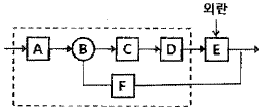
- 설정부, 조절부, 조작부, 검출부
- 설정부, 조작부, 조절부, 검출부
- 설정부, 조작부, 조절부, 제어대상
- 설정부, 조작부, 비교부, 제어대상
(정답률: 82%)
19. 아크용접 작업시의 주의사항으로 적당하지 않은 것은?
- 눈 및 피부를 노출시키지 말 것
- 홀더가 가열될 시에는 물에 식힐 것
- 비가 올 때는 옥외작업을 금지할 것
- 슬랙을 제거할 때는 보안경을 사용할 것
(정답률: 95%)
20. 아세틸렌가스의 폭발하한계와 폭발상한계 값으로 옳은 것은?
- 폭발하한계 : 1.8vol%, 폭발상한계 : 8.4vol%
- 폭발하한계 : 2.1vol%, 폭발상한계 : 9.5vol%
- 폭발하한계 : 2.5vol%, 폭발상한계 : 81.0vol%
- 폭발하한계 : 4.0vol%, 폭발상한계 : 74.5vol%
(정답률: 85%)
2과목: 임의구분
21. 동관 이음쇠의 한 쪽은 안쪽으로 동관이 삽입 접합되고 다른 쪽은 암나사를 내며, 강관에는 수나사를 내어 나사이음하게 되는 경우에 필요한 동합금 이음쇠는?
- C×F 어댑터
- Ftg×F 어댑터
- C×M 어댑터
- Ftg×M 어댑터
(정답률: 77%)
22. 다음 중 유체의 흐름에 저항이 적고, 침식성의 유체에 대해서도 유체통로 속만을 내식성 재료로 하여 산 등의 화학약품을 차단하는 경우에 가장 적합한 것은?
- 플랩밸브(flap valve)
- 체크밸브(check valve)
- 플러그밸브(plug valve)
- 다이어프램밸브(diaphragm valve)
(정답률: 85%)
23. 배관의 상하 이동에 관계없이 추를 사용하여 항상 일정한 하중으로 관을 지지하는 행거는?
- 리;지드 행거(rigid hanger)
- 브레이스 행거(brace hanger)
- 콘스탄트 행거(constant hanger)
- 베어리어블 행거(variable hanger)
(정답률: 74%)
24. 증기트랩 장착상의 주의사항으로 옳지 않은 것은?
- 열동트랩은 냉각관이 필요하다.
- 버킷형은 운전 정지 중에 동결할 우려가 없다.
- 열동트랩은 응축수의 온도를 감지하여 작동한다.
- 열동트랩은 구조상 역류를 일으킬 위험성이 있다.
(정답률: 76%)
25. 타르 및 아스팔트 도료에 관한 설명으로 옳은 것은?
- 50℃에서 담금질하여 사용해야 가장 좋다.
- 첨가제 없이 도료 단독으로 사용하여야 효과가 높다.
- 노출시에는 외부적 요인에 따라 균열이 발생하기 쉽다.
- 관 표면에 도포시 물과 접촉하면 부식하기 쉬우므로 내식성 도료를 도장해야 한다.
(정답률: 61%)
26. 닥타일 주철관의 이음 종류가 아닌 것은?
- TS 이음
- 타이톤 이음
- 메카니칼 이음
- K-P 메카니칼 이음
(정답률: 78%)
27. 네오프렌 패킹에 관한 설명으로 가장 부적절한 것은?
- 고압 증기배관에 주로 사용된다.
- 내열 범위가 -46~121℃인 합성고무이다.
- 물, 공기, 기름, 냉매배관용에 사용한다.
- 내유성, 내후성, 내산화성 및 기계적 성질이 우수하다.
(정답률: 79%)
28. 외경 25mm인 강관으로 흡수해야 할 신축향이 25mm인 루프형 신축곡관을 만들 때 필요한 관의 길이는?
- 78.5cm
- 103.5cm
- 157cm
- 185cm
(정답률: 41%)
29. 보기의 ()안에 들어갈 수치가 옳은 것은?
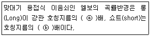
- ⓐ 1.5 ⓑ 1.0
- ⓐ 2.0 ⓑ 1.5
- ⓐ 1.7 ⓑ 1.5
- ⓐ 2.0 ⓑ 1.7
(정답률: 77%)
30. 비중이 작고 열 및 전기 전도도가 높으며 용접이 가능하며, 고순도의 것일수록 내식성 및 가공성이 좋아지므로 이음매 없는 관과 용접관, 화학공업용 배관, 열교환기 등에 적합한 관은?
- 강관
- 알루미늄관
- 염화비닐관
- 석면 시멘트관
(정답률: 79%)
31. 밸브에서 고속도 유체의 충격에 의한 기계적인 파괴작용 또는 이에 화학적 부식작용이 수반되어 고체표면의 국부에 심한 손상을 발생하는 현상은?
- 이로전
- 채터링
- 플러싱
- 코로전
(정답률: 74%)
32. 스테인리스 강관에 관한 설명으로 옳지 않은 것은?
- 적수, 백수, 청수의 염려가 없다.
- 저온 충격이 크고 한냉지 배관이 가능하다.
- 스테인리스강은 철에 12~20% 정도의 크롬을 함유하여 만들어진다.
- 나사식, 몰코식, 노허브 접합, 플랜지식 이음법 등 특수 시공법으로 시공이 복잡하다.
(정답률: 79%)
33. 다음 중 사용압력이 0.7N/mm2 정도의 맞은 곳에 사용되며 직관, TS관, 편수컬러관이 있는 관은?
- 경질 비닐전선관
- 일반용 경질 염화비닐관
- 내열성 경질 염화비닐관
- 수도용 경질 염화비닐관
(정답률: 63%)
34. 토목, 건축, 철탑, 발판, 지주, 말뚝 등에 많이 쓰이는 강관은?
- 고압배관용 탄소강관
- 고온배관용 탄소강관
- 일반구조용 탄소강관
- 경질염화비닐 라이닝강관
(정답률: 88%)
35. 피복 아크 용접에서 직류 정극성(DCSP)에 관한 특성으로 옳지 않은 것은?
- 비드 폭이 넓다.
- 모재의 용입이 깊다.
- 용접봉의 용융이 늦다.
- 일반적으로 후판에 많이 쓰인다.
(정답률: 62%)
36. 그림과 같이 45° 벤딩을 하고자 한다. 벤딩하여야 할 부분인 “X"로 표시된 파이프 길이는 약 몇 mm인가?
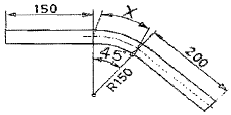
- 117.8
- 133.0
- 183.0
- 266.5
(정답률: 66%)
37. 주철관의 소켓 이음에 관한 설명으로 옳은 것은?
- 코킹 방법은 예리한 정을 먼저 사용하고 점차 둔한 정을 사용한다.
- 용융 납은 2~3회에 걸쳐 나누어 삽입하면서 매회 코킹하도록 한다.
- 콜 타르(coal tar)는 주철관 표면에 방수 피막을 형성시키기 위해 도포한다.
- 마(야안)의 삽입길이는 수도용의 경우 전체 삽입길이의 2/3, 배수용은 1/3이 적합하다.
(정답률: 75%)
38. 폴리부틸렌관 이음방법 중 PB 이음이라도로 하는 이음방법은?
- 올코 이음(molco joint)
- 에이콘 이음(acorn joint)
- 압축 이음(compressed joint)
- 플라스턴 이음(plastan joint)
(정답률: 88%)
39. 점 용접을 할 때 용접기로 조정할 수 있는 3요소에 해당하는 조건은?
- 가압력, 통전시간, 전류의 종류
- 가압력, 통전시간, 전류의 세기
- 전극의 재질, 전극의 구조, 전극의 종류
- 전극의 재질, 전극의 구조, 전류의 세기
(정답률: 83%)
40. 비중 1.2인 유체를 0.067m3/s 유량으로 높이 12m를 올리려면 펌프의 동력은 약 몇 kW가 필요한가? (단, 펌프의 효율은 100%로 가정한다.)
- 9.46
- 10.14
- 11.2
- 15.01
(정답률: 54%)
3과목: 임의구분
41. 구리관의 끝 부분을 정확한 지름의 원형으로 만들 때 사용하는 주된 공구는?
- 커터
- 가열기
- 익스팬더
- 사이징 툴
(정답률: 88%)
42. 10℃의 물 1kg을 100℃의 포화증기로 만드는데 필요한 열량은 약 몇 kJ인가? (단, 물의 비열은 4.19kJ/kgㆍK이고, 물의 증발 잠열은 2256.7kJ/kg이다.)
- 539
- 639
- 2633.8
- 2937.8
(정답률: 76%)
43. 폴리에틸관의 이음방법에 해당되지 않는 것은?
- 인서트 이음
- 용착 슬리브 이음
- 기볼트 이음
- 테이퍼 조인트 이음
(정답률: 58%)
44. 증발량이 0.54kg/s인 보일러의 증기엔탈피가 2636kJ/kg이고, 급수엔탈피는 83.9kJ/kg이다. 이 보일러의 상당 증발량은 약 얼마인가? (단, 물의 증발잠열은 2256.7kJ/kg이다.)
- 0.61kg/s
- 0.63kg/s
- 0.86kg/s
- 0.98kg/s
(정답률: 37%)
45. 에이콘 이음(acorn joint)에서 에이콘 파이프의 사용가능 온도로 가장 적합한 것은?
- 0~150℃
- -10~130℃
- -30~110℃
- -50~100℃
(정답률: 73%)
46. 산소 아세틸렌가스 절단시 예열용 불꽃의 세기가 강할 경우의 영향으로 옳지 않은 것은?
- 절단면이 거칠어 진다.
- 역화를 일으키기 쉽다.
- 슬랙이 잘 떨어지지 않는다.
- 윗 모서리가 녹아 둥글게 된다.
(정답률: 76%)
47. 원뿔을 방사선 전개법으로 전개하려고 한다. 부채꼴의 중심각(θ)을 바르게 표기한 것은? (단, r은 원뿔의 반지름, l은 원뿔 빗변의 길이이다.)
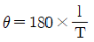
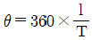
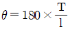
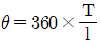
(정답률: 61%)
48. 표준약어의 설명으로 옳지 않은 것은?
- API : 미국석유협회
- AWS : 미국용접협회
- AISI : 미국철강협회
- ANSI : 미국재료시험학회
(정답률: 79%)
49. 다음 평면배관도를 입체배관도로 표현한 것으로 옳은 것은?
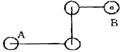
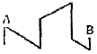
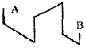
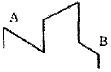
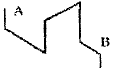
(정답률: 85%)
50. 다음 중 플러그 용접 기호는?
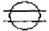
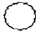
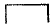
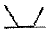
(정답률: 76%)
51. KS B ISO 6412-1(제도-베관의 간략 도시방법)에서 규정하는 선의 종류별 호칭방법에 따른 선의 적용에 관한 연결이 옳지 않은 것은?
- 가는 1점 쇄선 : 중심선
- 굵은 파선 : 바닥, 벽, 전장, 구멍
- 굵은 1점 쇄선 : 특수지정선
- 가는 실선 : 해칭, 인출선, 치수선, 치수보조선
(정답률: 65%)
52. 다음 도면의 구격 중 A열 규격인 것은?
- 257mm×364mm
- 515mm×728mm
- 594mm×841mm
- 1,030mm×1,456mm
(정답률: 71%)
53. 다음 중 각도 치수선을 표시하는 방법으로 옳은 것은?
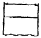
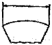
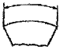
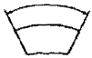
(정답률: 82%)
54. 다음 계장용 표시 신호의 조작부 기호 중 전동식 기호를 나타낸 것은?
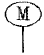
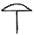
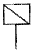
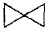
(정답률: 87%)
55. np관리도에서 시료군 마다 시료수(n)는 100이고, 시료군의 수(k)는 20, ∑np=77이다. 이 때 np관리도의 관리상한선(UCL)을 구하면 약 얼마인가?
- 8.94
- 3.85
- 5.77
- 9.62
(정답률: 46%)
56. 그림의 OC곡선을 보고 가장 올바른 내용을 나타낸 것은?
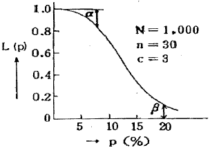
- a:소비자 위험
- L(P):로트가 합격할 확률
- β : 생산자 위험
- 부적합품률 : 0.03
(정답률: 78%)
57. 미국의 마틴 마리에타사(Martin Marietta Corp)에서 시작된 품질개선을 위한 동기부여 프로그램으로, 모든 작업자가 무결점을 목표로 설정하고, 처음부터 작업을 올바르게 수행함으로써 품질비용을 줄이기 위한 프로그램은 무엇인가?
- TPM 활동
- 6 시그마 운동
- ZD 운동
- ISO 9001 인증
(정답률: 84%)
58. 다음 중 단속생산 시스템과 비교한 연속생산 시스템의 특징으로 옳은 것은?
- 단위당 생산원가가 낮다.
- 다품종 소량생산에 적합하다.
- 생산방식은 주문생산방식이다.
- 생산설비는 범용설비를 사용한다.
(정답률: 73%)
59. 일정 통제를 할 때 1일당 그 작업을 단축하는데 소요되는 비용의 증가를 의미하는 것은?
- 정상소요시간(Normal duration time)
- 비용견적(Cost estimation)
- 비용구배(Cost slope)
- 총비용(Total cost)
(정답률: 79%)
60. MTM(Method Time Measurement)법에서 사용되는 1 TMU(Time Measurement Unit)는 몇 시간인가?
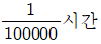
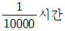
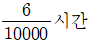
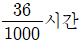
(정답률: 82%)